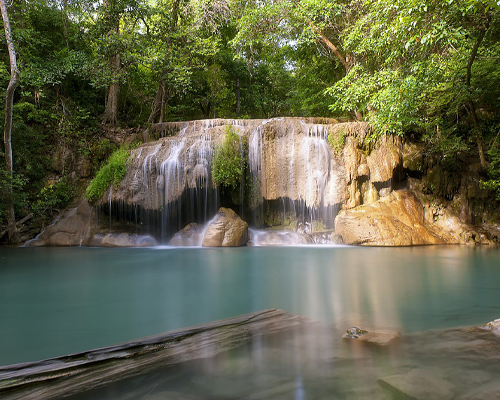

Home

แหล่งที่มา:
Wikipedia.org
น้ำตกเอราวัณ
น้ำตกเอราวัณ ตั้งอยู่ในเขตอุทยานแห่งชาติเอราวัณ ตำบลท่ากระดาน อำเภอศรีสวัสดิ์ จังหวัดกาญจนบุรี อยู่ห่างจากที่
ทำการอุทยานประมาณ 500 เมตร มีความสูงจากระดับน้ำทะเลตั้งแต่ 100 - 400 เมตร แบ่งเป็นชั้นต่างๆ 7 ชั้น มีระยะ
ทางจากชั้นล่างสุดขึ้นไปชั้นบนสุด 1500 เมตร ลำน้ำเมื่อตกลงมาแล้วจะไหลลงแม่น้ำแควใหญ่บริเวณที่ทำการอุทยาน
เดิมน้ำตกนี้ชาวบ้านเรียกว่า น้ำตกสะด่องม่องลาย อันเป็นชื่อลำห้วยม่องลายที่เป็นต้นน้ำ โดยบริเวณน้ำตกจะมีน้ำ
ตลอดปี แต่จะมีน้ำน้อยในช่วงฤดูแล้ง ราวเดือนธันวาคมถึงเมษายน